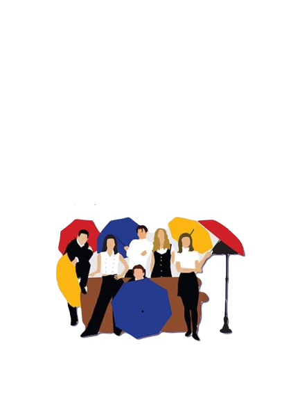
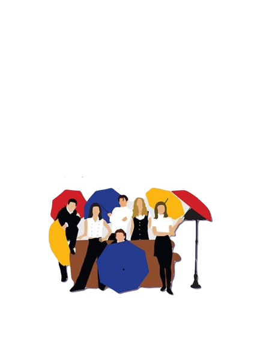

MoviePack

Profile


Set more than a decade after the events of the first film, "Avatar: The Way of Water" begins to tell the story of theSully family (Jake, Neytiri, and their kids), he trouble that follows them, the lengths they go to keep each other safe, the battles they fight to stay alive, and the tragedies they endure.
B.G.E.D
We present to you this action-packed short film,
directed by the Airsoft Istanbul Team and directed by the Karakutu movie.
THE WALKING DEAD
Sheriff Deputy Rick Grimes wakes up from a coma to learn the world is in ruins
and must lead a group of survivors to stay alive.
KESİŞME:İYİKİ VARSIN EREN
Intersection: Good Luck Eren, released on January 1, 2022, produced by TRT and Digital Arts,
written by Mert Dikmen, Alper Uyar and Özer Feyzioğlu,
directed by Özer Feyzioğlu, starring İsmail Hacıoğlu and Rahman Beşel feature film.
CASABLANCA
Casablanca, directed by Michael Curtiz, has a special place among the Hollywood classics.
The premiere of the movie Casablanca was held in New York on November 26, 1942.
The Godfather
A crime film that follows the Corleone family,
a powerful mafia clan in New York City. The patriarch of the family, Vito Corleone, is a respected figure in the criminal underworld,
and the film explores the power struggles and conflicts within the family.
Pulp Fiction
A crime film that tells several intersecting stories,
including the lives of two hitmen, a boxer, and a gangster's wife.
The film is known for its nonlinear narrative structure and its use of pop culture references.
 

Ross Geller, Rachel Green, Monica Geller, Joey Tribbiani, Chandler Bing, and Phoebe Buffay are six twenty-somethings living in New York City. Over the course of 10 years and seasons, these friends go through life lessons, family, love, drama, friendship, and comedy.
Frankenstein
is a 1931 American pre-Code horror film
directed by James Whale and adapted from the play by Peggy Webling, which in turn is based on Mary Shelley's novel of the same name.
"Winter's Tale"
is a romantic fantasy film about a burglar named Peter Lake who falls in love with a dying woman named Beverly Penn.
Their love story defies time and death as it spans from 1916 to present day in a magical version of New York City.
The Lost World
is a 1960 De Luxe Color and CinemaScope fantasy adventure
film directed by Irwin Allen and based on Arthur Conan Doyle's 1912 novel of the same name
Rush
is a sports drama film directed by Ron Howard and written by Peter Morgan. The film is based on the true story of the intense rivalry between
Formula One drivers James Hunt and Niki Lauda during the 1976 Formula One World Championship.
Train to Busan
is a South Korean zombie apocalypse film directed by Yeon Sang-ho.
The film follows a group of passengers who are on a train from Seoul to Busan during a zombie outbreak in South Korea.
The main protagonist, a father named Seok-woo and his daughter
The Social Network
is a drama film directed by David Fincher and written by Aaron Sorkin.
The film is based on the true story of the creation of Facebook and the legal battles that ensued.
© MoviePack All Right Reserved